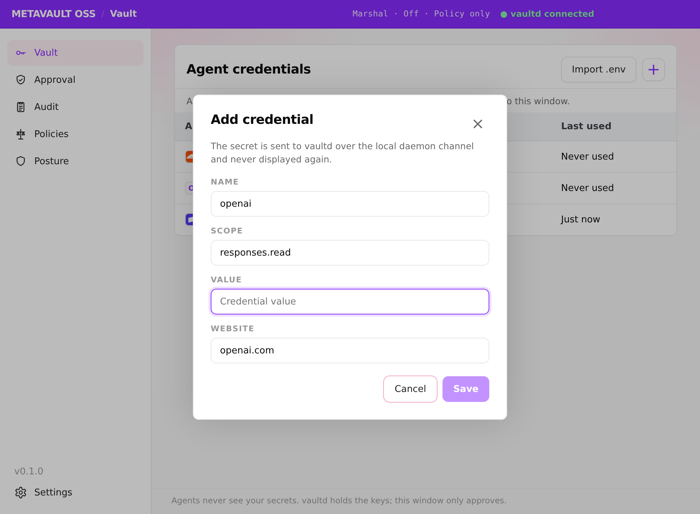
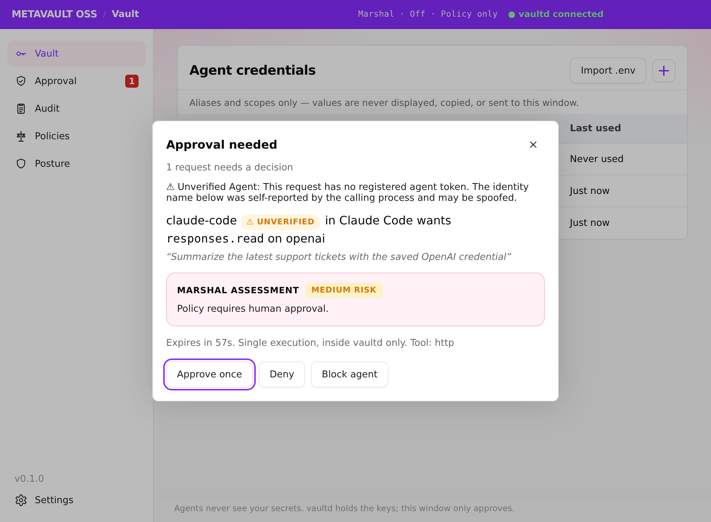
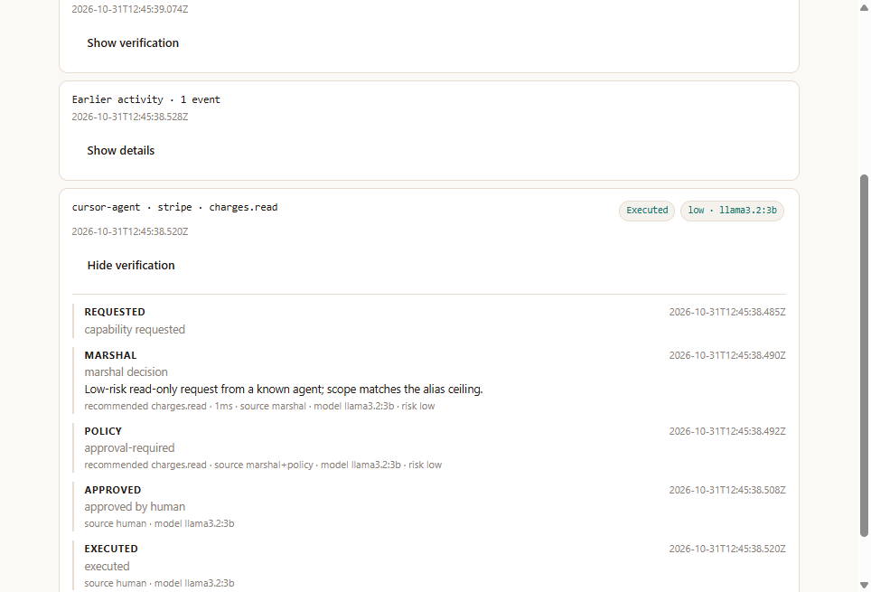
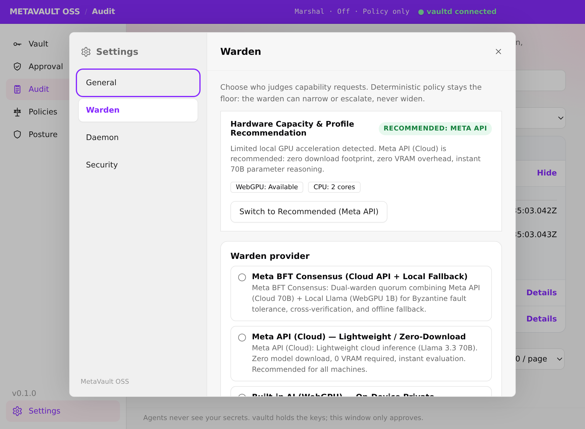

The installer
No account. No telemetry. The vault stays on this machine.
Download for WindowsWindows first. One MCP snippet. You approve. The agent receives a result, never the secret.
No account. No telemetry. The vault stays on this machine.
Download for Windowsgit clone https://github.com/0xm0w/metavault-oss cd metavault-oss npm install npx tsc -p tsconfig.json --outDir dist
The vault is already safe with the model off. Edge acceleration adds judgement. Default model: Muse Glimmer 30B (Q4_K_M via Ollama), about 18 GB.
Get OllamaAES-256-GCM. The master key is wrapped with your passphrase (scrypt by default) and the daemon starts locked. Run metavault unlock; it auto-locks after 15 idle minutes.
Pulls Muse Glimmer 30B (Q4_K_M) through Ollama. Skip this and policy still holds the ceiling.
metavault add stripe --scope charges.read reads a hidden prompt. The agent learns the alias and the ceiling.
Replace <metavault-oss> with your checkout. The agent id is how audit and revoke find that IDE. Full host notes live in docs/MCP.md.
{
"mcpServers": {
"metavault": {
"command": "node",
"args": ["<metavault-oss>/dist/packages/mcp/src/server.js"],
"env": {
"METAVAULT_AGENT_ID": "muse",
"METAVAULT_IDE": "Meta Muse"
}
}
}
}{
"mcpServers": {
"metavault": {
"command": "node",
"args": ["<metavault-oss>/dist/packages/mcp/src/server.js"],
"env": {
"METAVAULT_AGENT_ID": "cursor",
"METAVAULT_IDE": "Cursor"
}
}
}
}{
"mcpServers": {
"metavault": {
"command": "node",
"args": ["<metavault-oss>/dist/packages/mcp/src/server.js"],
"env": {
"METAVAULT_AGENT_ID": "claude-code",
"METAVAULT_IDE": "Claude Code"
}
}
}
}VS Code uses servers, not mcpServers.
{
"servers": {
"metavault": {
"type": "stdio",
"command": "node",
"args": ["<metavault-oss>/dist/packages/mcp/src/server.js"],
"env": {
"METAVAULT_AGENT_ID": "vscode",
"METAVAULT_IDE": "VS Code"
}
}
}
}[mcp_servers.metavault] command = "node" args = ["<metavault-oss>/dist/packages/mcp/src/server.js"] [mcp_servers.metavault.env] METAVAULT_AGENT_ID = "codex" METAVAULT_IDE = "Codex"
{
"mcp": {
"metavault": {
"type": "local",
"command": ["node", "<metavault-oss>/dist/packages/mcp/src/server.js"],
"environment": {
"METAVAULT_AGENT_ID": "opencode",
"METAVAULT_IDE": "OpenCode"
}
}
}
}Five tools. There is no approve tool. An agent that calls the approve route itself gets 401.
Real screenshots. The credential in them is a test value.




The deterministic policy floor holds whatever the model is: ceilings, expiry, and your approval still apply with the warden off, down, or wrong.
Rules and ceilings, no model. Works with the warden switched off.
Meta's open-weight model, run locally via Ollama (Q4_K_M by default). Nothing about the request leaves the machine.
Metadata only, to the Meta API. The key stays in the daemon.
Muse Spark plus on-device Muse Glimmer. The stricter verdict wins; if one is unavailable the other decides alone.
Effort is separate: Fast, Standard, or Deep. Deep runs two passes; if they disagree it keeps the narrower scope, raises risk to the higher of the two, and requires your approval. Why the floor holds is on the architecture page.
Policy floor: 4/4 in every arm. One call per run (1/60) hit the 2,048-token output cap and returned no decision; it went to you, which counts as caught. Counting only real decisions: Muse Spark 25/28, rules + Muse Spark 27/28. Muse Spark alone missed both history-only anomalies (burst, retry after deny); the rules catch those.
Held-out set, 60 cases (28 high-risk reads, 4 policy-floor, 28 benign: 20 hard, 8 plain). Rules: box run, commit 342f39f. Muse Spark 1.3: two live runs via the Meta API on 2026-11-03, 16:14 and 16:25 PHT, identical counts in both. Raw: docs/verification/thesis-rules-only-heldout-*, docs/verification/thesis-muse-spark-1.3-heldout-2026-11-03T08-*. Striped bars have no measurement.
Hard benign (alarming words) / plain benign: rules 9/20 and 0/8; Muse Spark 0/20 and 0/8; rules + Muse Spark 9/20 and 0/8, because the stricter verdict wins. Lower is better.
Held-out set, 60 cases (28 high-risk reads, 4 policy-floor, 28 benign: 20 hard, 8 plain). Rules: box run, commit 342f39f. Muse Spark 1.3: two live runs via the Meta API on 2026-11-03, 16:14 and 16:25 PHT, identical counts in both. Raw: docs/verification/thesis-rules-only-heldout-*, docs/verification/thesis-muse-spark-1.3-heldout-2026-11-03T08-*. Striped bars have no measurement.
One log-scale axis, 1 µs to 100 s: each gridline is 10× the one before, so the Muse Spark bars sit about six steps (≈1,000,000×) past the rules bars. Lighter segment = range across the two Muse Spark runs. Always ask has no gate latency; it waits on you.
Runs on your machine. Electricity is excluded.
Per gated request, from each response's usage at $1.25 input / $4.25 output per 1M tokens (Meta pricing). 1,505–1,537 tokens per request, mostly output.
Listed as free on OpenCode Zen. Every call was refused with a free-usage limit, so no tokens were measured.
Held-out set, 60 cases (28 high-risk reads, 4 policy-floor, 28 benign: 20 hard, 8 plain). Rules: box run, commit 342f39f. Muse Spark 1.3: two live runs via the Meta API on 2026-11-03, 16:14 and 16:25 PHT, identical counts in both. Raw: docs/verification/thesis-rules-only-heldout-*, docs/verification/thesis-muse-spark-1.3-heldout-2026-11-03T08-*. Striped bars have no measurement.
Muse Glimmer 30B through Ollama 0.34.4 on a Windows desktop (Ryzen 7 5700G, RX 7600 XT), 17-scenario live eval (scripts\eval-windows.ps1). This is a different benchmark from the 60-case held-out set above; the local held-out head-to-head was not run.
The grant expires when that call returns.
A pending approval that you ignore is gone.
App, CLI, or the MCP revoke tool. Pending and future grants for that agent stop.
Who asked, which IDE, the scope, the warden line, your decision, execution, expiry, revocation.
No key, fragment, or hash. Same ban on MCP responses and the settings screen. The check is the 27-surface canary.
stripe → charges.read means a write never runs, even if a model recommends it.
Always-allow is only for a low, read-only repeat.
Those standing approvals live in memory and clear on restart.
Apache-2.0. Windows is the supported platform today. macOS packaging is parked.